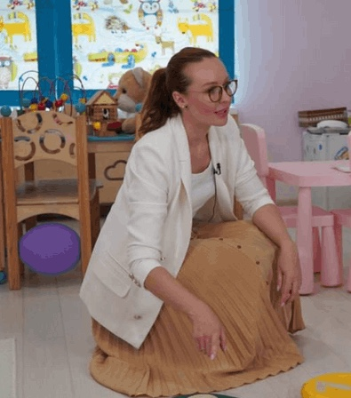
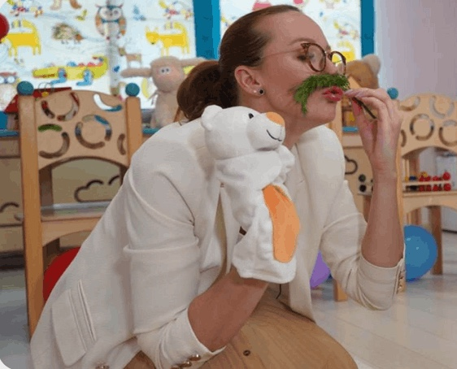

логопедзапуск речи
Юлия
Корсакова

01 обо мне
Обо мне

Разговорила более 3000 детей по всему миру
Автор легендарного курса по запуску речи и автор книг
Владелица сети логокабинетов в Москве и онлайн школы
Более 5000 семей по всему миру запустили речь своим малышам
Запуск речи от 1,5 лет
02 услуги